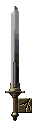
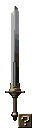
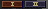

- アイテムと装備 -
アイテムは、「使用するアイテム」と「装備するアイテム」の
二つに大きく分けられます。
「使用するアイテム」は、使用するとプレイヤーの体力が回復したり、
敵にダメージを与えたりすることが出来ます。
仲間に使用するアイテムも存在します。
「装備するアイテム」は、装備するとプレイヤーの
攻撃力や防御力に影響します。
また、特殊な効果をもつ装備品もあります。
・アイテムの使用・
アイテムを使用するにはアイテム画面を開き、
使用したいアイテムを右クリックしてください。
アイテムを使用すると、そのアイテムはなくなります。
・アイテムの装備・
装備品を装備するには、アイテム画面を開き、
装備したいアイテムを左クリックして、装備する場所で
もう一度左クリックしてください。
・装備品の耐久力・
| 各装備品には耐久力があります。 長い間使用していると耐久力が落ち、耐久力が0に なってしまうと、その装備品は機能しなくなってしまいます。 耐久力が0になる前に、定期的に装備品の修理を行ってください。 |
 |
・アイテムの鑑定・
| 装備品の中には「?」アイコンのついているものがあります。 それは未鑑定アイテムと呼ばれ、手に入れた段階では どのようなアイテムなのか詳しいことがわかりません。 そこで、そのようなアイテムは商人に鑑定してもらってください。 鑑定してもらうと、そのアイテムについての詳細を 見ることができ、装備することが出来るようになります。 |
 |
・両手持ち武器・
(第三話以降)
装備品の中には両手持ちの武器が存在しますが、
両手持ち武器を装備すると、装備しているは盾は効力を発揮しません。
その際、盾は半透明表示されます。
・装備切り替え・
(第三話以降)
| プレイヤーは二種類の武器、盾を切り替えて装備することが可能です。 アイテム画面にある右図のようなボタンを押すか、CapsLock キーを押すことで切り替えることが出来ます。 |
 |
|
また、ボタンを選択した状態で右クリックすると、右図のようになり「Ⅰ」と「Ⅱ」で共通の装備を使用することが出来ます。 |